9 Evapotranspiration
Dingman (2015), chapter 6.
Globally, about 62% of the precipitation that falls on the continents is evapotranspirated, amounting to 73 thousand km^3/yr. Of this, about 42% (29 thousand km^3/yr) is transpiration, and about 3% is open-water evaporation. Most of the remainder is interception loss; soil evaporation is a minor component of the total.
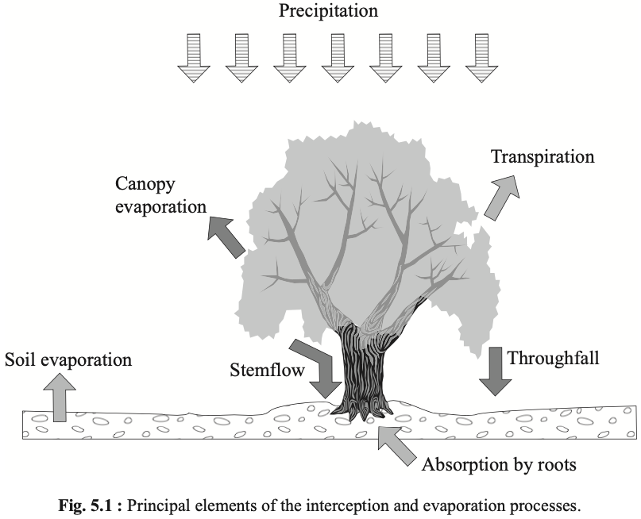
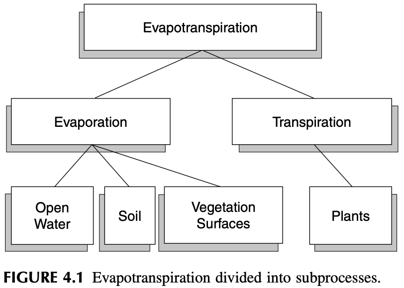
9.0.1 Potential Evapotranspiration
Potential Evapotranspiration (PET) is the rate at which evapotranspiration would occur from a large area completely and uniformly covered with growing vegetation with access to an unlimited supply of soil water and without advection or heat-storage effects.
Several characteristics of a vegetative surface have a strong influence on ET rate.
- the albedo of the surface, which determines the net radiation;
- the maximum leaf conductance;
- the atmospheric conductance, largely determined by vegetation height; d) presence or absence of intercepted water.
9.0.2 Reference-Crop Evapotranspiration
Reference-crop evapotranspiration (RET) is the amount of water transpired by a short green crop, completely shading the ground, of uniform height, and never short of water.
The magnitude of PET is often calculated from meteorological data collected under conditions in which the actual ET rate is less than the potential rate. If ET had been occurring at the potential rate, the latent- and sensible-heat exchanges between air and the surface, and hence the air temperature and humidity, would have been considerably different. (Brutsaert (2005) 1982) 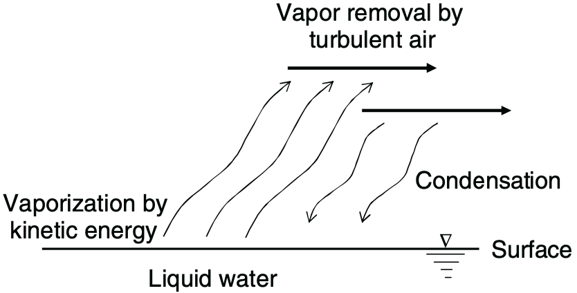
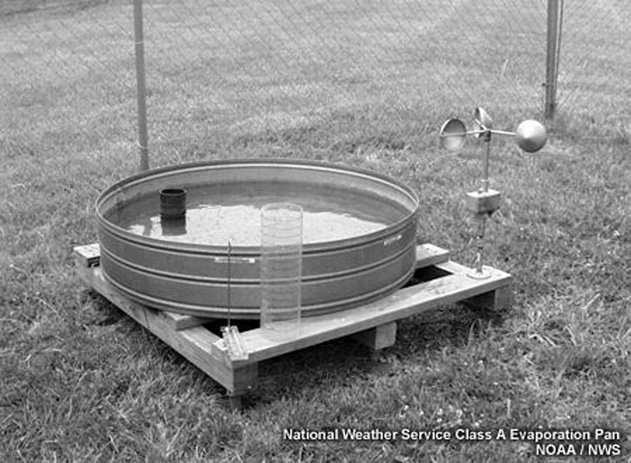
9.1 Review of methods
There are a variety of ways to estimate evaporative flux in nature. The following table categorizes each method based on the data that must be acquired to apply it:
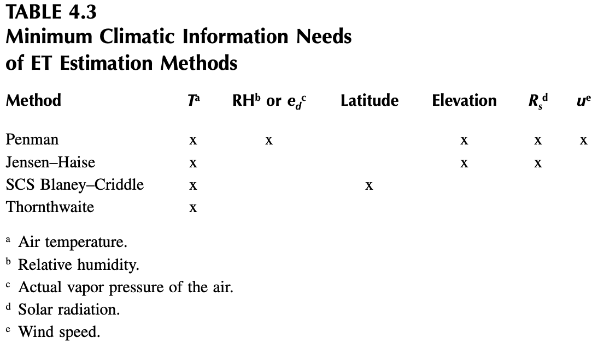
These methods also vary in the timescales in which they are relevant, typically in correlation with the variety of data needed:
- Thornthwaite and SCS Blaney-Criddle: monthly or seasonal estimations (minimal data)
- Jensen-Haise: 5-day estimates (good enough timescale and data for irrigation scheduling)
- Penman: daily estimates
- Penman-Monteith: hourly estimates (requires a lot of data)
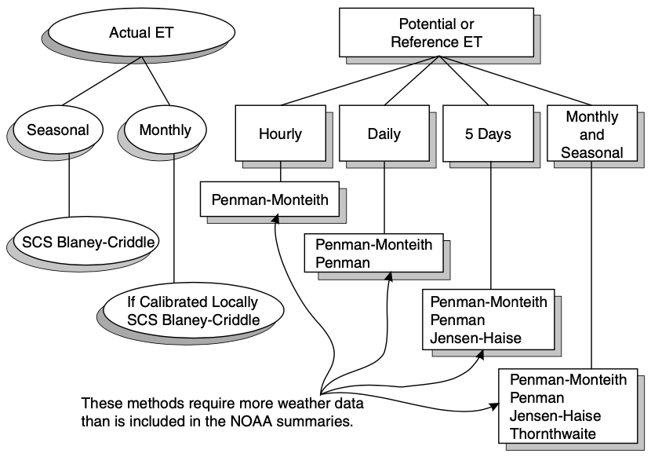
9.2 Thornthwaite
Source: Ward and Trimble (2003), pages 107-108.
Thornthwaite (1948) developed an equation to predict monthly evapotranspiration from mean monthly temperature and latitude data (Equation 4.27). The small amount of data needed is attractive because often ET needs to be predicted for sites where few weather data are available. Based on what we know about ET, we should be skeptical about the general applicability of such a simple equation. Thornthwaite (1948) was not satisfied with the proposed approach: “The mathematical development is far from satisfactory. It is empirical. … The chief obstacle at present to the development of a rational equation is the lack of understanding of why potential ET corresponding to a given temperature is not the same everywhere.”
Taylor and Ashcroft (1972), as cited in Skaggs (1980), provided insight into the answer to Thornthwaite’s ques- tion. They said:
This equation, being based entirely upon a temperature relationship, has the disadvantage of a rather flimsy phys- ical basis and has only weak theoretical justification. Since temperature and vapor pressure gradients are mod- ified by the movement of air and by the heating of the soil and surroundings, the formula is not generally valid, but must be tested empirically whenever the climate is appreciably different from areas in which it has been tested. … In spite of these shortcomings, the method has been widely used. Because it is based entirely on temper- ature data that are available in a large number of localities, it can be applied in situations where the basic data of the Penman method are not available.
M.E. Jensen et al. (1990) warn that Thornthwaite’s method is generally only applicable to areas that have climates similar to that of the east central U.S., and it is not applicable to arid and semiarid regions.
Thornthwaite (1948) found that evapotranspiration could be predicted from an equation of the form
E = 16\left[ \frac{10\,T^\text{monthly mean}}{I} \right]^a, where I = \sum_{i=1}^{12} \left[ \frac{T_i^\text{monthly mean}}{5} \right]^{1.514}, and \begin{split} a =& +6.75\times 10^{-7}I^3 \\ &- 7.71\times 10^{-5}I^2 \\ &+ 1.792\times 10^{-2}I \\ &+ 0.49239 \end{split}
- E is the monthly potential ET (mm)
- T_\text{monthly mean} is the mean monthly temperature in °C
- I is a heat index
- a is a location-dependent coefficient
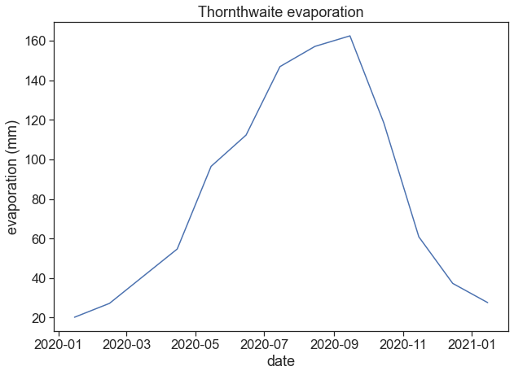
9.3 Penman
Sources:
Brutsaert (2005), pages 123-127.
Ward and Trimble (2003), subsections 4.5.2, 4.5.3, 4.5.5, 4.6.6.
Allen et al. (1998), “Crop evapotranspiration - Guidelines for computing crop water requirements - FAO Irrigation and drainage paper 56”
The Penman model is almost entirely a theory-based formula for predicting evaporative flux. It can run on a much finer timescale, and requires a much wider variety of data than most models. In addition to temperature, the Penman functions on measurements of radiation, wind speed, elevation above sea level, vapor-pressure deficit, and heat flux density to the ground. The potential ET (in mm d^{-1}) is given by:
E = \frac{1}{\lambda}\left[ \frac{\Delta}{\Delta+\gamma}Q_{ne}+ \frac{\gamma}{\Delta+\gamma}E_A \right],
where Q_n is the available energy flux density
Q_n = R_n - G,
and E_A is the drying power of the air
E_A = 6.43\cdot f(u)\cdot\text{VPD}.
The constituents of the equations above are
- E: potential evapotranspiration (mm d^{-1})
- \Delta: slope of the saturation water vapor pressure curve (kPa °C^{-1})
- \gamma: psychrometric constant (kPA °C^{-1})
- \lambda: latent heat of vaporization (MJ kg^{-1})
- R_n: net radiation (MJ m^{-2} d^{-1})
- G: heat flux density to the ground (MJ m^{-2} d^{-1})
- f(u): wind function (dimensionless)
- VPD: vapor pressure deficit (kPa)
and the number 6.43 adjusts the units of E_A so it is in MJ m^{-2} d^{-1}. In what follows, we will further discuss these constituents.
9.3.1 Psychrometric Constant
The psychrometric constant \gamma (kPA °C^{-1}) relates the partial pressure of water in air to the air temperature:
\begin{split} \gamma &= \frac{c_p\, P}{\lambda\cdot MW_\text{ratio}} \\ P &= 101.3-0.01055 H \\ \lambda &= 2.501 - 2.361\times 10^{-3}\,T \end{split}
- MW_\text{ratio}=0.622: ratio molecular weight of water vapor/dry air
- P: atmospheric pressure (kPa). Can be either measured or inferred from station height above sea level (m).
- \lambda: latent heat of water vaporization (MJ kg^{-1})
- c_p=0.001013: specific heat capacity of moist air (MJ kg^{-1} °C^{-1})
9.3.2 Net Radiation
Source: Ward and Trimble (2003), page 99.
R_n (MJ m^{-2} d^{-1}) is net radiation, the balance between net short wave R_s and the long wave R_b components of the radiation:
R_n = (1-\alpha)R_s\!\! \downarrow -R_b \!\! \uparrow,
where \alpha (dimensionless) is the albedo. The net outgoing thermal radiation R_b is given by
R_b = \left( a\frac{R_s}{R_{so}+b} \right)R_{bo},
where R_{so} is the solar radiation on a cloudless day, and it depends on latitude and day of the year. R_{bo} is given by
R_{bo} = \epsilon\, \sigma\, T^4_{Kelvin},
where \sigma=4.903\times 10^{-9} MJ m^{-2} d^{-1} K^{-4}, and \epsilon is net net emissivity:
\epsilon=-0.02+0.261 \exp\left(-7.77\times10^{-4}T_{Celcius}^2\right).
The parameters a and b are determined for the climate of the area:
- a=1.0, b=0.0 for humid areas,
- a=1.2, b=-0.2 for arid areas,
- a=1.1, b=-0.1 for semihumid areas.
We can find below a table for R_{so}, from Ward and Trimble (2003), page 100. 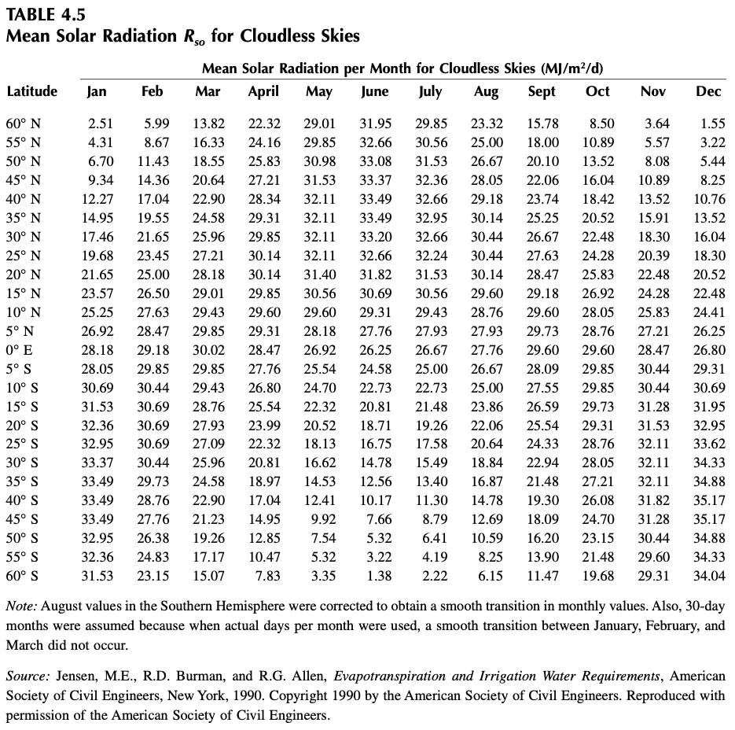
9.3.3 Heat Flux Density to the Ground
The heat flux density to the ground G (MJ m^{-2} d^{-1}) can be calculated using
G = 4.2\frac{T_{i+1}-T_{i-1}}{\Delta t},
where \Delta t is the time in days between midpoints of time periods i+1 and i−1, and T is the air temperature (°C).
This expression is really a finite differences implementation of a time derivative:
\displaystyle \frac{\text{d}T}{\text{d}t} = \lim_{\Delta t\rightarrow 0}\frac{T(t+\Delta t) - T(t-\Delta t)}{2\Delta t}.
9.3.4 Vapor Pressure
Source: Ward and Trimble (2003), page 95.
The Vapor Pressure Deficit (VPD, in kPa) is the difference between saturation vapor pressure e_s and actual vapor pressure e_d:
\text{VPD} = e_s - e_d.
For temperatures ranging from 0 to 50 °C, the saturation vapor pressure can be calculated with
e_s = \exp \left[ \frac{16.78\, T -116.9}{T+237.3} \right],
and the actual vapor pressure is given by
e_d = e_s \frac{RH}{100},
where RH is the relative humidity (%), and the temperature T in the equations above is in degrees Celcius.
We can see below a graph of e_s(T)
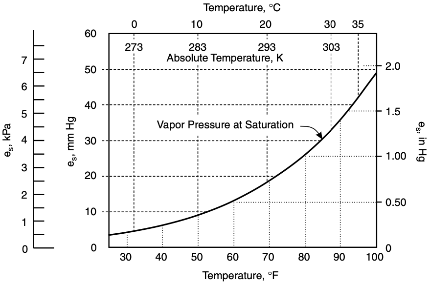
The factor \Delta is the slope of e_s(T). See the figure below from Brutsaert, where the saturation vapor pressure is called e^*):
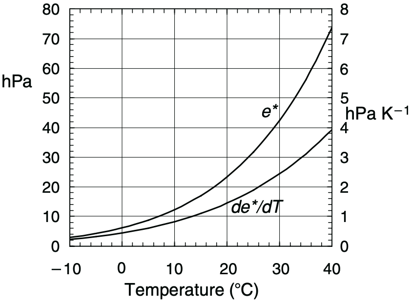
There are a few ways of defining the function for \Delta(T) (kPa °C^{-1}). Ward and Trimble (2003) give the following:
\Delta = 0.200 \cdot (0.00738\,T + 0.8072)^7 - 0.000116,
while differentiating the exponential expression given before yields:
\Delta = \frac{\text{d} e_s}{\text{d}T} = e_s(T)\cdot \frac{4098.79}{(T+237.3)^2}.
9.3.5 Wind Function
Source: Ward and Trimble (2003), page 108
f(u) = 0.26(1.0 + 0.54\, u_2)
10 Meaning of “potential” evapotranspiration
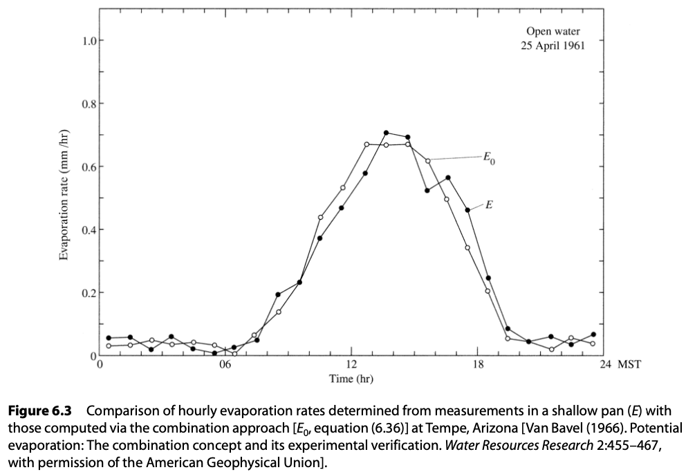
10.0.1 Crop Coefficient
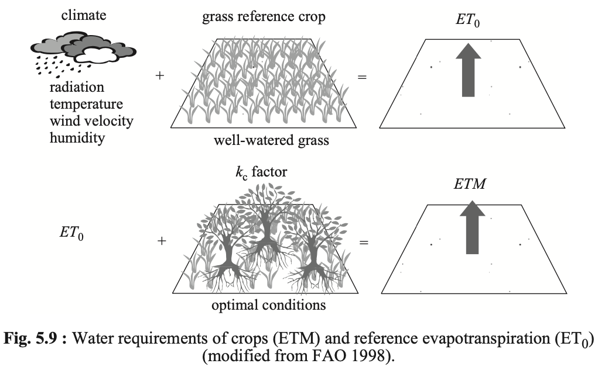
E_{t} = k_c E_{tr,\, tp}
E_{t}= actual ET
k_c= crop coefficient
E_{tr}= reference crop ET
E_{tp}= potential ET
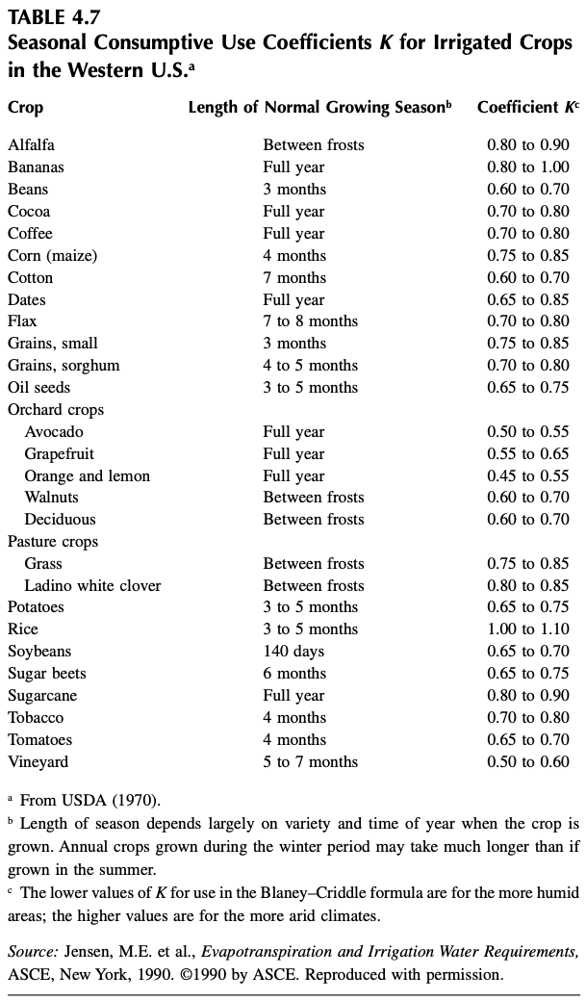
10.1 Pitfalls
Different books and papers will present slightly different versions of the Penman equation. Basically, they differ in the units they use for the various components, and one should be vary aware of what inputs any given equation is expecting to get.